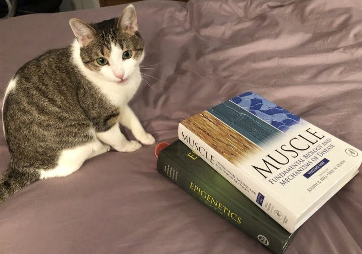

Dr. Mochi's Code-Along Blog
About mew
Greetings, my name is Mochi, and I am a molecular biologist cat who can also write
code. This is my blog.
Resume

- Education
Northwestern University, Chicago, IL, Postdoctoral fellowship (2018-present)
Northwestern University Data Visualization Bootcamp, Chicago, IL (2019)
UT Southwestern Medical Center, Dallas, TX, PhD (2018)
Hacettepe University, Ankara, Turkey, MD (2010)
- Technical Skills
Expert in mouse genetics, developmental biology and gene editing technologies.
Currently training in epigenetics.
- Computer skills
Intermediate proficiency in Python, Unix, and R.
Proficiency in analysis of next-generation sequencing data.
Frequently asked questions
What is the purrrpose of this blog?
The code-along blog is a log of a biologist learning to code, written from the perspective of Mochi the cat.
Are you really a cat?
Yes, I am a two year-old tabby hailing from the midwest.
Useful Links
I am from the anti-cruelty society of Chicago.
Click here to find out more about them.